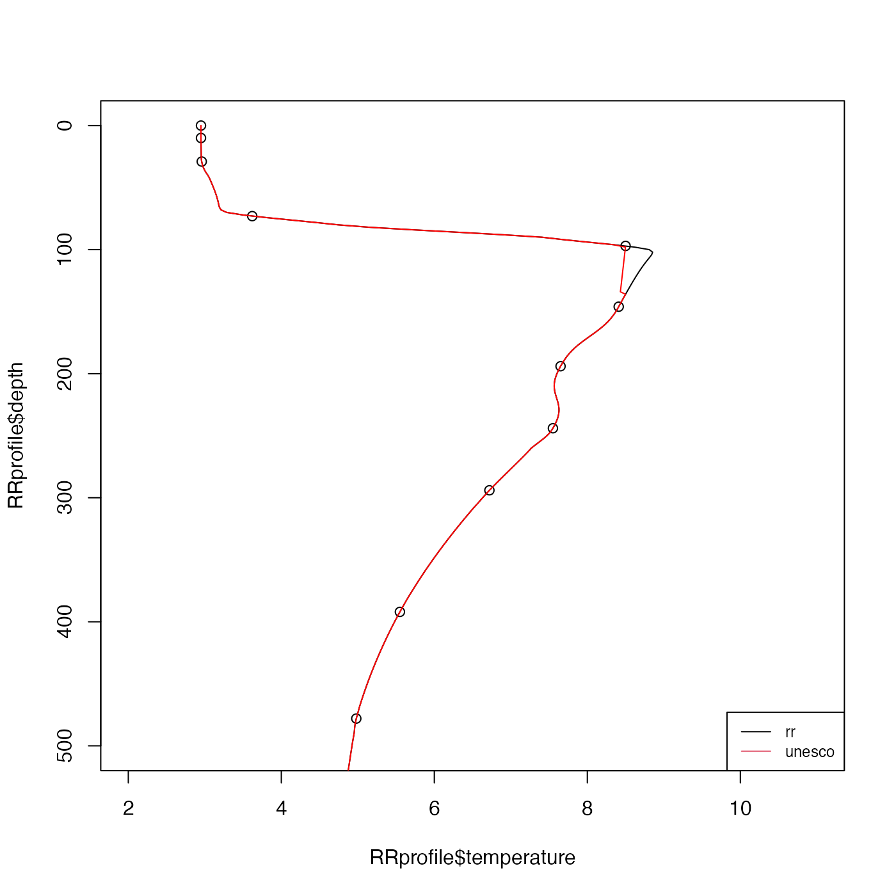

Interpolate one-dimensional data using schemes that permit curvature but tends minimize extrema that are not well-indicated by the data.
Usage
oceApprox(x, y, xout, method = c("rr", "unesco"))Details
Setting method="rr" yields the weighted-parabola algorithm of
Reiniger and Ross (1968). For procedure is as follows. First, the
interpolant for any xout value that is outside the range of x
is set to NA. Next, linear interpolation is used for any xout value
that has only one smaller neighboring x value, or one larger
neighboring value. For all other values of xout, the 4 neighboring
points x are sought, two smaller and two larger. Then two parabolas
are determined, one from the two smaller points plus the nearest larger
point, and the other from the nearest smaller point and the two larger
points. A weighted sum of these two parabolas provides the interpolated
value. Note that, in the notation of Reiniger and Ross (1968), this
algorithm uses m=2 and n=1. (A future version of this routine
might provide the ability to modify these values.)
Setting method="unesco" yields the method that is used by the U.S.
National Oceanographic Data Center. It is described in pages 48-50 of
reference 2; reference 3 presumably contains the same information but it is
not as easily accessible. The method works as follows.
If there are data above 5m depth, then the surface value is taken to equal to the shallowest recorded value.
Distance bounds are put on the four neighboring points, and the Reiniger-Ross method is used for interpolated points with sufficiently four close neighbors. The bounds are described in table 15 of reference 2 only for so-called standard depths; in the present instance they are transformed to the following rules. Inner neighbors must be within 5m for data above 10m, 50m above 250m 100m above 900m, 200m above 2000m, or within 1000m otherwise. Outer neighbors must be within 200m above 500m, 400m above 1300m, or 1000m otherwise. If two or more points meet these criteria, Lagrangian interpolation is used. If not,
NAis used as the interpolant.
After these rules are applied, the interpolated value is compared with the values immediately above and below it, and if it is outside the range, simple linear interpolation is used.
References
R.F. Reiniger and C.K. Ross, 1968. A method of interpolation with application to oceanographic data. Deep Sea Research, 15, 185-193.
Daphne R. Johnson, Tim P. Boyer, Hernan E. Garcia, Ricardo A. Locarnini, Olga K. Baranova, and Melissa M. Zweng, 2011. World Ocean Database 2009 Documentation. NODC Internal report 20. Ocean Climate Laboratory, National Oceanographic Data Center. Silver Spring, Maryland.
UNESCO, 1991. Processing of oceanographic station data, 138 pp., Imprimerie des Presses Universitaires de France, United Nations Educational, Scientific and Cultural Organization, France.
Examples
library(oce)
if (require(ocedata)) {
data(RRprofile)
zz <- seq(0, 2000, 2)
plot(RRprofile$temperature, RRprofile$depth, ylim = c(500, 0), xlim = c(2, 11))
# Contrast two methods
a1 <- oce.approx(RRprofile$depth, RRprofile$temperature, zz, "rr")
a2 <- oce.approx(RRprofile$depth, RRprofile$temperature, zz, "unesco")
lines(a1, zz)
lines(a2, zz, col = "red")
legend("bottomright", lwd = 1, col = 1:2, legend = c("rr", "unesco"), cex = 3 / 4)
}
#> Loading required package: ocedata
